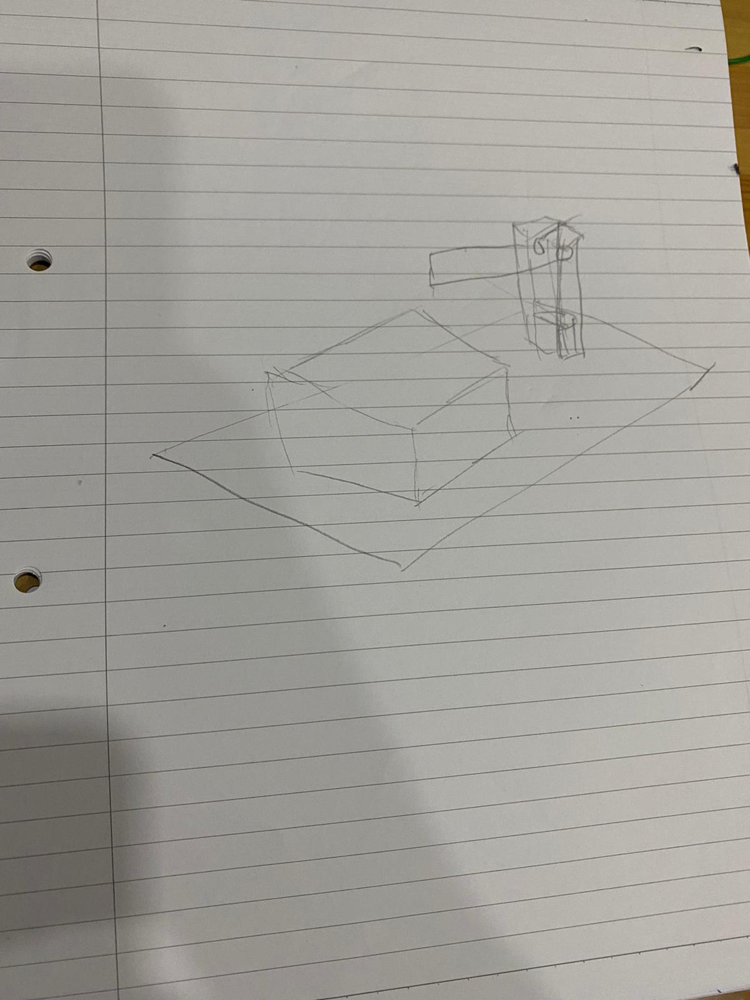
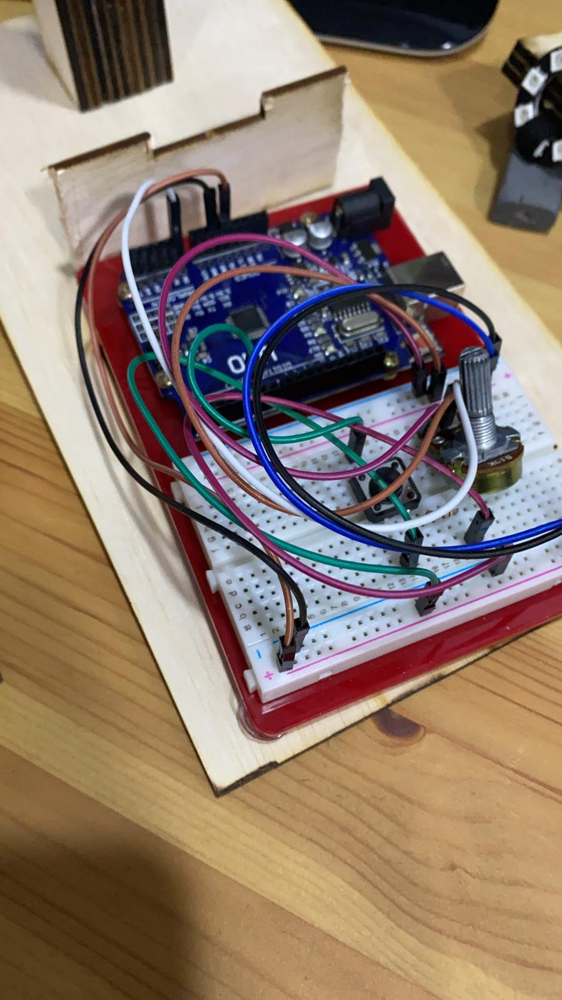

My Lamp
For my final project, I decided to create a table lamp.
Slide
Click here for the presentation slides CLICK
{kind=link}
My initial sketch
This is the initial sketch that I made to visualise how the lamp would look like. From the design, the lamp consists of a base a box, two stands and an arm where the LED will be hung. The arm will be attatched to the stand by a 3D printed bolt and nut. Tightening the bolt and nut will set the place of the arm.
Inspiration
I got the inspiration to do a table lamp when the lecturer gave me options on what I can make. I decided on a table lamp as I thought that it would be cool to make a lamp.
Process of creating the lamp
To start making the lamp, I first used Fusion 360 to design the parts that I needed to laser cut and 3D print. I started out by creating the box, the base, stand and arm for the lamp. The box I created is used to house my Uno Arduino and Breadboard.
After creating all the parts that need to be laser cut, I created the bolt and nut.

The final look of the lamp will be like this.
This are the electronics that I used to make the lamp. There is a potentiometer to adjust the brightness of the light.
Where I got the code fromThe link is to show where I got the code from and some of the inspiration for my table lamp
What Worked and others
Overall, there is still a lot that I can work on for my lamp. The things that were completed are the form of the lamp and the electronics required for it to work. The things that were successful was the 3D printing of the bolt and nut. The thing that needs to be worked on further is the designing of the laser cut parts. As I was unable to visualise the design of my lamp, there are inaccuracies in the placement of the finger tabs as well as the height of the box is too short.